←Primer año→
Grim Fandango comienza con un Celso Flores aprensivo y Manuel "Manny" Calavera, el nuevo agente de viajes de Sr. Flores. Manny es parte del Departamento de la Muerte, una organización que ayuda a las almas a atravesar el Octavo Inframundo hacia el Noveno Inframundo donde las almas finalmente podrán descansar. El viaje a pie supuestamente tomará cuatro años, pero para las almas que vivieron una vida de virtud y servicio, pueden obtener un boleto para el Número 9, un tren que las llevará directamente a la tierra del descanso eterno en 4 minutos. Sin embargo, si el alma tuvo una vida mala, se verán obligados a caminar por el peligroso Octavo Inframundo hacia el Noveno. Desafortunadamente para el Sr. Flores, no tuvo la mejor vida. Recibe uno de los paquetes inferiores, la Línea Excelsior, que es un bastón de caminata elegante con una brújula. Manny revela a Sr. Flores que está trabajando en su trabajo en el DoD para pagar alguna deuda, por lo que no se le permite salir del Octavo Inframundo todavía.
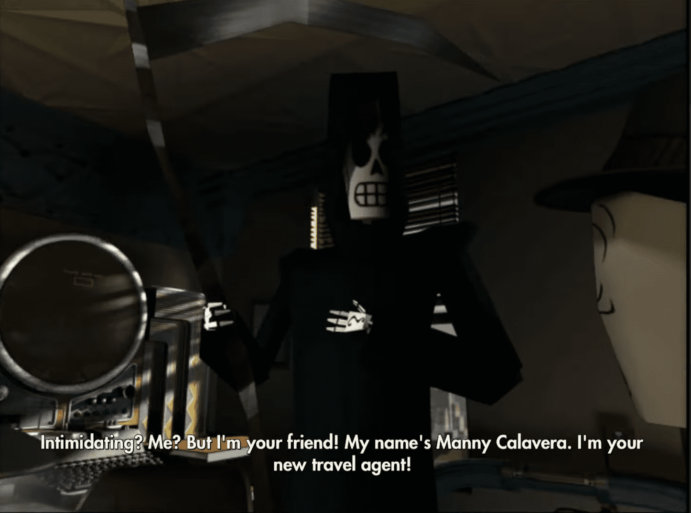La Intoxicación
Justo cuando Manny está deseando tener un cliente mejor, recibe un mensaje. Camina hasta el tubo de correo y lee el mensaje. En él, el jefe de Manny, Don Copal, informa a todos los agentes del DOD que ha habido una intoxicación masiva. Antes de salir de tu oficina, acércate a la pequeña mesa en el lado izquierdo de la habitación. Recoge la baraja de cartas. No las necesitarás ahora, pero te ahorrará tiempo más tarde. Guárdalas y sal de la oficina. Continúa por el pasillo, pasando por la recepcionista, Eva. Puedes hablar con ella si quieres, pero no es necesario. Gira a la izquierda y verás dos puertas de ascensor. La que está al final del pasillo lleva al vestíbulo y la pequeña a la izquierda conduce al garaje. Dirígete al garaje para coger tu coche.
Un gran coche negro pasará rápidamente junto a ti cuando llegues al garaje. Ahora necesitarás conseguir tu coche. Camina hacia el noroeste, hasta el rincón del garaje. Aquí encontrarás una pequeña oficina. Toca la puerta para conocer a Glottis, el mecánico. Él te informará que tu rival, Domino Hurley, le dio el resto del día libre a tu conductor, lo cual es muy amable, porque justamente necesitas a tu conductor.
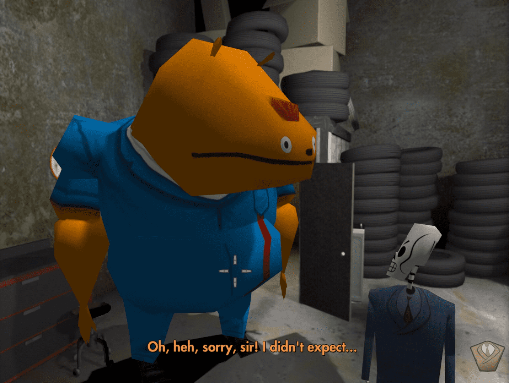Glottis te entregará un formulario de orden de trabajo que necesita ser firmado por tu jefe. Él está fuera de la ciudad, pero eso no impedirá que consigas que el formulario sea firmado. Sal del garaje a través del ascensor por el que entraste. Ahora, ve al otro ascensor que lleva al vestíbulo y sal del edificio. Una vez afuera, gira a la derecha. Luego, ignora el festival y dirígete hacia el callejón a la izquierda. Verás una cuerda hecha de corbatas al final del callejón. Sube por ella y luego entra por la ventana abierta.
Ahora que estás en la oficina de Don, ve hacia la computadora que está a la derecha. Cambia su respuesta automática a "¡Ah, demonios, Eva! ¡Fírmalo tú misma, ¿quieres?! ¡Estoy ocupado!" Una vez que hayas hecho eso, ve con Eva y haz que firme la orden de trabajo. Esto desencadenará una larga escena. Eva firmará la orden de trabajo, y una vez hecho eso, Glottis modificará tu auto. Luego te conducirá al mundo de los vivos, que es un lugar muy extraño. Pasarás por tu rival Domino en el camino.
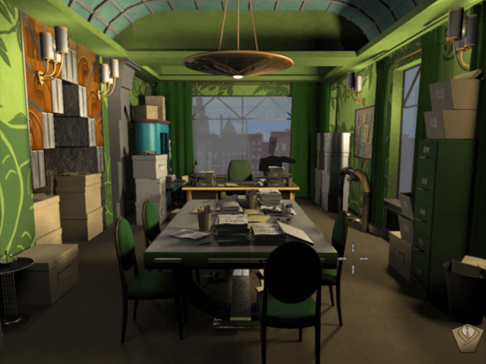La escena termina una vez que llegas a un restaurante. Todo lo que necesitas hacer aquí es sacar tu guadaña y abrir la bolsa de cuerpo en el suelo. Esto desencadenará otra escena. Pronto estarás de vuelta en la oficina, empaquetando a tu nuevo cliente en un ataúd. Don entrará en la oficina y amenazará la posición de Manny en el DOD. Manny decide que para conseguir un mejor cliente, tendrá que buscarlo por sí mismo.
Encontrando un mejor cliente
Cuando salgas de la sala de empaquetado, camina hacia el otro lado del pasillo, hacia la sala del interruptor de tubos. Es posible que aún no la hayas visto, así que si estás perdido, estará a la derecha de la salida. Al acercarte al área, un gran demonio rosa y molesto saldrá de la habitación. Se quejará con Manny de que la gente está enviando botellas de cerveza vacías por los tubos de mensajes y están rompiendo el interruptor de tubos.
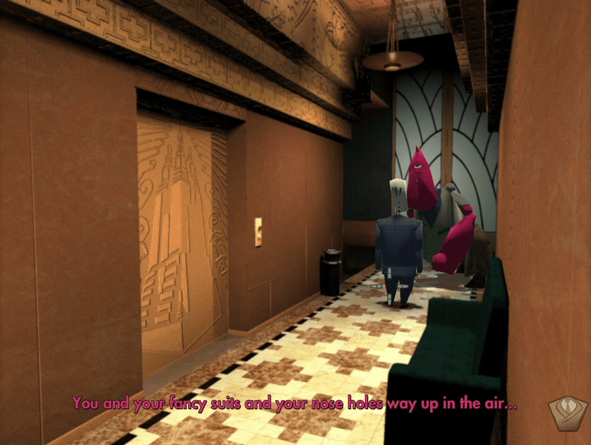Después de que el demonio termine de despotricar, sal del edificio y dirígete hacia el festival a la derecha. Camina hacia la fila de carpas y habla con el payaso. Es bastante atrevido, así que es divertido explorar sus opciones de diálogo. Además de ser entretenido, tiene globos vacíos que necesitarás para completar esta sección.
Regresa a la oficina y ve al cuarto de empaquetado. Llena un globo con espuma de empaque del grifo rojo y otro con espuma del grifo azul. Si llegas a cometer un error, consigue otro globo. Una vez que estén llenos, regresa a tu oficina y envíalos por el tubo de mensajes. Explotarán y romperán el interruptor del tubo. Ve al cuarto del interruptor del tubo. El demonio rosa estará trabajando en la máquina. Antes de entrar en la máquina del interruptor, asegúrate de cerrar con llave la puerta de la máquina. Esto te permitirá acceder a la máquina más tarde.
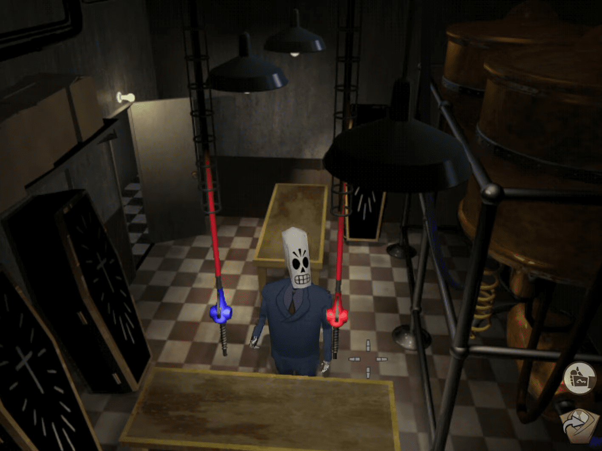El demonio rosa estará increíblemente enojado. Dile: "¿Quién haría una cosa tan terrible como esta?" y si no quieres hablar más con él, simplemente dale a "Bueno, me tengo que ir". El demonio hará algo y luego se prenderá fuego. Corre hacia la pared y agarra el extintor de incendios. El demonio te dirá que rociar el extintor de incendios sobre la espuma de empaque causará una explosión. Sal de la habitación y el demonio rosa te seguirá poco después. Antes de irse, cerrará la puerta de la máquina.
Aquí es donde entran en juego las cartas. Si aún no lo has hecho, ve a la oficina de Manny y recoge el mazo de cartas que está sobre la mesa en la esquina de la habitación. Ve al escritorio de Eva y párate frente a él para que los ascensores estén detrás de ti. Saca el mazo de cartas y usa el perforador de agujeros para hacer agujeros en una carta. Si Manny no está mirando el perforador de agujeros, simplemente hablará con Eva, así que asegúrate de que esté mirando el perforador de agujeros con las cartas fuera.
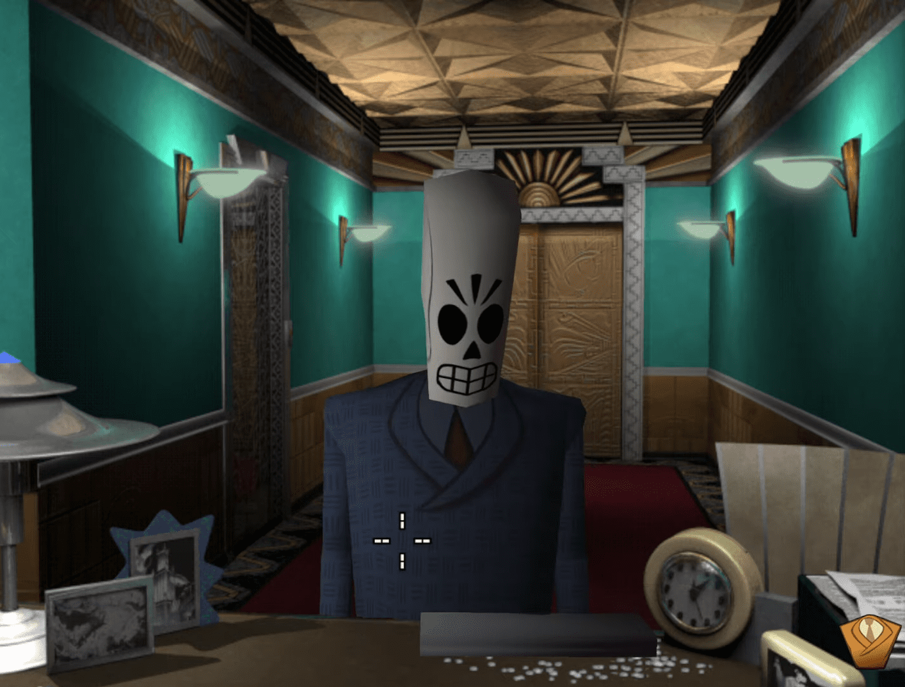Regresa a la sala del conmutador de tubos y entra en la máquina. Saca la carta con los agujeros y métela en el tubo rojo. Esto desencadenará la escena que conduce a tu nuevo cliente, Mercedes Colomar. Glottis te llevará al mundo de los vivos en su súper modificado coche de la empresa. Una vez que llegues a Mercedes, no tendrás que hacer nada más.
Mercedes Colomar
Mercedes tiene un historial perfecto. Hizo servicio comunitario y era una persona amable. Por todos los medios, merece un excelente paquete de viaje. Sin embargo, cuando Manny va a buscar su archivo en la computadora, muestra que no tiene opciones. Elige "Disculpe, pero tengo que arreglar este lío." para terminar rápidamente la conversación, o explora las opciones de diálogo si lo deseas.
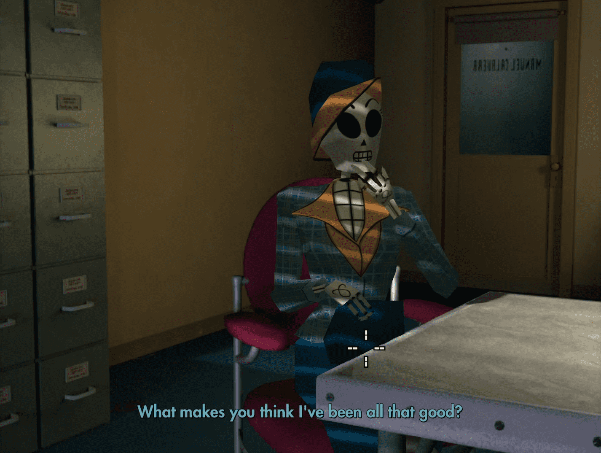Cuando salgas de la conversación, dirígete hacia la oficina de Don, que está justo al lado del escritorio de Eva. Mientras te alejas, Mercedes se disculpará por haber decepcionado a Manny. Cuando te acerques al escritorio de Eva, Don saldrá de su oficina y te ordenará que entres en la suya. Don te regañará en una escena cortada. Durante su reprimenda, llamará a Eva y le pedirá que traiga a Mercedes. Ella le informará que ha decidido cruzar el Octavo Inframundo después de suponer que había hecho algo mal. Don estará aún más enojado, diciendo que se suponía que debía obtener un boleto para el Número 9.
Palomas mensajeras
Después de que Don termine su reprimenda, te encerrará en el cobertizo de Glottis en el garaje. Para salir, sacude el mango de la puerta. Una figura sombría aparecerá en la ventana.Salvador "Sal" Limones, el líder de la organización rebelde, la Alianza de Almas Perdidas (LSA, por sus siglas en inglés), te llevará a la sede de la organización. Sal te informa que la LSA necesita ayuda para recopilar información sobre la corrupción que atraviesa el Departamento de la Muerte (DOD, por sus siglas en inglés). Revela que los altos mandos del DOD están robando dinero a las almas a las que se supone que deben servir, razón por la cual muchos de los clientes de Manny no califican para algunos de los mejores paquetes. Ve a hablar con Sal.
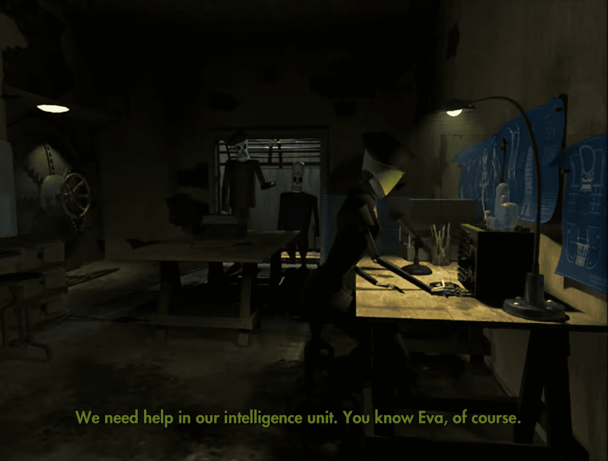Sal de la LSA. Regresa al payaso en el festival y pídele un globo de gato. Luego, agarra un pan de la tienda junto al payaso. Vuelve al callejón y sube por la cuerda de corbatas. La oficina de Don estará cerrada. Camina alrededor del borde y verás una ventana diferente. Ábrela y entrarás en la oficina de Domino. Aquí encontrarás el protector bucal y el coral brillante. Puedes conseguir el protector bucal golpeando el saco de boxeo varias veces. Recógelo una vez que caiga al suelo y guárdalo. Ve al escritorio de Domino y abre el cajón para encontrar el coral brillante. Sal de la oficina.
Regresa a la cuerda improvisada. Levanta el lado que es más corto y colócalo en el borde. Saca el coral brillante y átalo al extremo de la cuerda. Manny lo lanzará hacia la escalera. Una vez que esté sujeto, sube por la cuerda y sigue subiendo por las escaleras hasta llegar al techo. Aquí verás una bandada de palomas y un nido en una de las rejillas de ventilación. Camina hacia allí. Antes de llegar a las palomas, habrá una rejilla en forma de cuenco en el suelo. Ve hacia ella y coloca el globo de gato. Si corres hacia las palomas con el globo, simplemente te ahuyentarán. Una vez que el globo esté en la rejilla, coloca el pan.
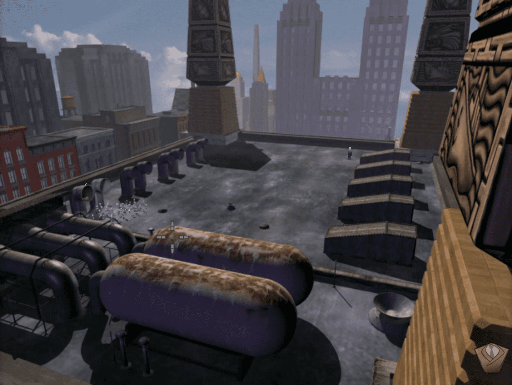Si has seguido el orden correcto, las palomas comerán el pan, explotarán el globo y luego volarán lejos. Ve a recoger los huevos de paloma y luego baja del techo. Antes de regresar a la base de la LSA, ve al garaje. La puerta está abierta, así que no necesitas pasar por el edificio para llegar allí. Entra en la cabaña de Glottis y coloca el fluido corporal automático (está en la máquina que parece una máquina de café espresso) en el protector bucal. Usa el protector bucal y Manny hará una impresión de sus dientes. Si hablaste con Eva de vuelta en el escondite, ella te habría dicho que necesitan tus dientes para acceder a los archivos. Si no lo hiciste, no te preocupes. Todavía completarás su tarea una vez que le lleves el protector bucal con tus huellas.
Ve a la base de la LSA. Para entrar, usa el ojo azul en la pared. Dale los huevos a Sal y el protector bucal a Eva, luego Sal te escoltará fuera de la ciudad a través de un túnel secreto. Él explica que para encontrar a Mercedes, Manny tendrá que viajar mucho, y posiblemente esperar mucho.
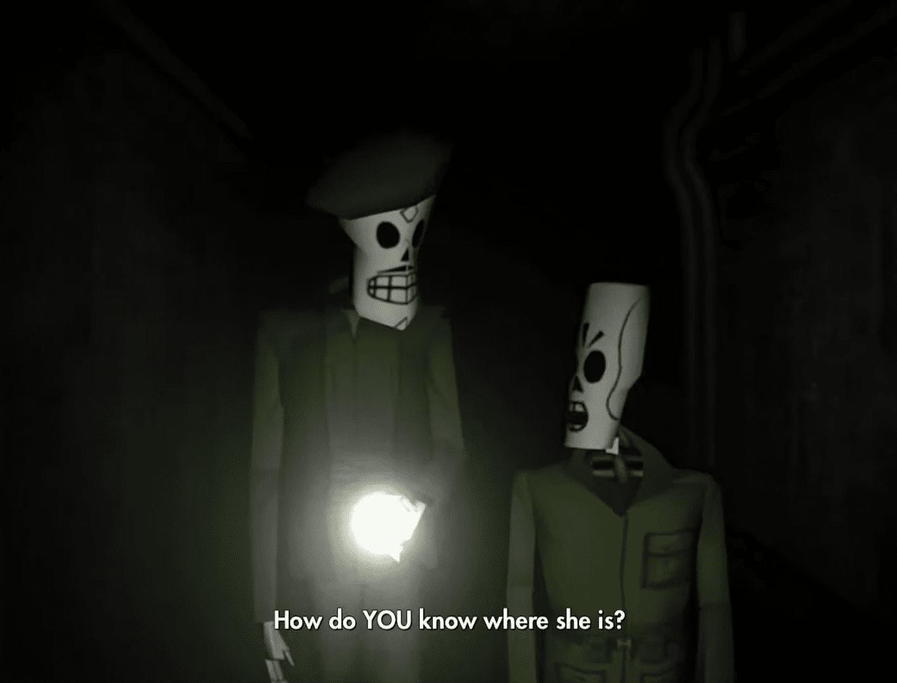El corazon de Glottis
Ahora necesitarás recuperar el corazón de Glottis. Ve al bosque y verás su corazón atrapado en una telaraña. Camina hacia él. Ve al montón de huesos junto a la telaraña y toma un hueso. Lánzalo a la telaraña. A los arañas realmente no les importa el hueso, y no puedes sacar el corazón con la mano. Saca tu guadaña y Manny usará el hueso para tirar de la telaraña hacia atrás. El corazón saldrá disparado de vuelta hacia Glottis. Regresa a donde está Glottis. Él estará durmiendo en el suelo. Toma su corazón y vuélveselo a colocar en su lugar. Glottis estará como nuevo. Esta sección termina con una escena cortada.
De vuelta en la oficina, Domino y Don están hablando con un hombre peligroso con un fez. Don es "plantado". Domino recibe la tarea de recuperar a Manny, a quien creen que todavía está encerrado en el garaje.
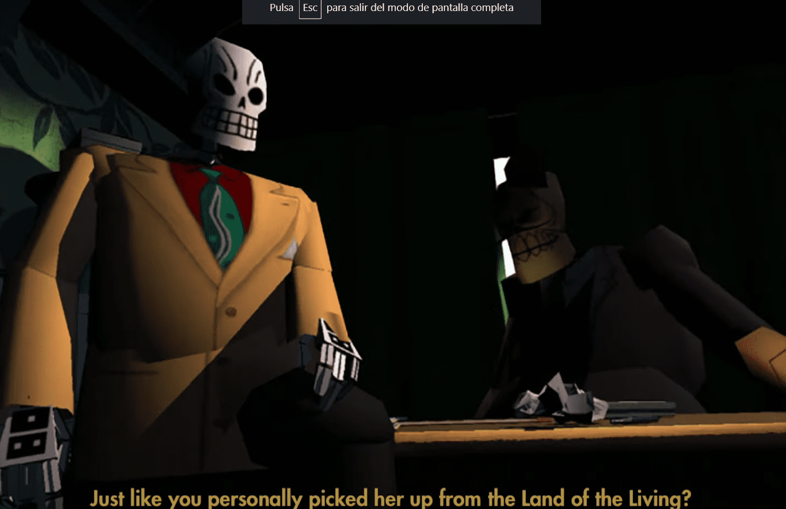Granja de árboles
Ahora que Glottis tiene su corazón de vuelta, sube al auto y dirígete hacia el paso en el noreste. Aquí verás un árbol siendo estrangulado por una máquina. Para liberarlo y obtener algunas piezas para mejorar tu auto, tendrás que resolver un rompecabezas rápido. El objetivo de este rompecabezas es derribar el árbol. Para hacerlo, necesitarás usar la carretilla para pellizcar los cables que conectan el árbol a la máquina. Cada cable corresponde a uno de los engranajes en el árbol. Pellizcar una línea con la carretilla detendrá el movimiento de su engranaje correspondiente. Para derribar el árbol, haz que los engranajes del lado derecho del árbol se muevan justo después de los del lado izquierdo. La clave aquí es asegurarse de que el árbol esté balanceándose de un lado a otro. Luego, apaga la máquina y Glottis trepará al árbol. Mientras Glottis está trabajando en el árbol, vuelve a encender la máquina.Si lo hiciste correctamente, esto desencadenará una escena en la que el árbol cae. Glottis modificará el coche y luego podrás regresar al claro principal en el bosque.
El laberinto del Bosque Petrificado
Ahora que estás de vuelta en la clara principal del Bosque Petrificado, sal del Carro de Huesos y ve a recoger el letrero de Direcciones. Camina hacia el sendero del noroeste. Adéntrate en él y te encontrarás rodeado por un círculo de árboles, cada uno con sus propias cuevas. Ignora las cuevas de los árboles. Lo único que necesitas hacer es colocar la señal en el suelo y observar hacia dónde gira. Luego, levántala y sigue la dirección en la que apuntaba la señal. Coloca periódicamente la señal de nuevo en el suelo para asegurarte de que estás yendo en la dirección correcta. En algún momento, al colocar la señal en el suelo, esta girará, apuntará hacia abajo y el suelo se abrirá para revelar un pasaje oculto. Desciende por ese pasaje. Dirígete hacia la señal, toma la llave y luego regresa con Glottis en la clara principal del bosque.
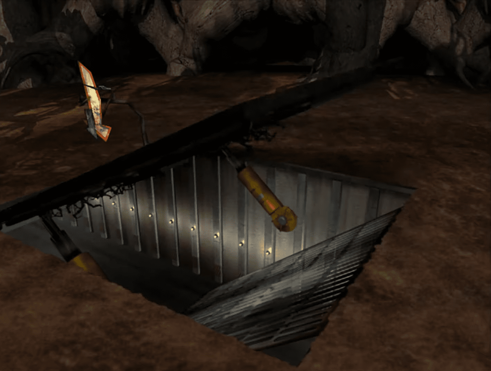Castores Demoníacos
Si aún no lo has hecho, vuelve al Carro de Huesos con Glottis en la clara principal del Bosque Petrificado. Toma el camino rocoso hacia el norte. Podrás atravesarlo gracias a las modificaciones de Glottis al Carro de Huesos. Terminarás frente a una puerta, donde Glottis te advertirá sobre los Castores Demoníacos. Atraviesa la puerta de todos modos. Manny verá un puente hecho de huesos, y sobre él habrá Castores Demoníacos. Estos castores enojados perseguirán a Manny lejos del puente, y él regresará con Glottis. Vuelve al puente. Habrá un marcador verde en el borde del puente cerca de ti. Camina hacia él y recoge tres Huesos. Luego, baja por el camino que está justo a la izquierda del puente.
Camina hacia el borde del agua. Vas a necesitar lanzar un hueso al agua. Esto atraerá a un castor demoníaco. Mientras salta al agua, rocía al castor demoníaco con el extintor de incendios para deshacerte de él. Deberás hacer esto tres veces para despejar el puente. Si te equivocas, ve a buscar unos cuantos huesos más del puente. Una vez que el puente esté despejado de los castores demoníacos, regresa con Glottis. En el extremo izquierdo de la puerta hay un candado. Desbloquéalo y podrás cruzar el puente con Glottis.
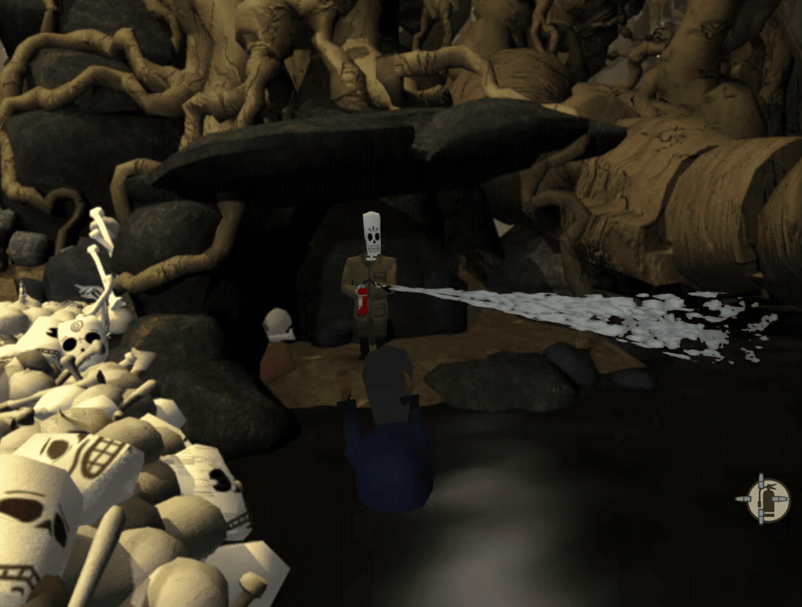Sube las escaleras y luego otra serie de escaleras hasta llegar al restaurante. Dentro, encontrarás una cara familiar. Celso Flores está limpiando el suelo, su bastón de paseo de primera calidad no está a la vista. Háblale. Puedes preguntarle sobre Meche, pero no tendrá ninguna información sobre ella. Celso te entregará una foto de su esposa. Sal del restaurante, baja las escaleras y camina hacia la niebla. Ve hasta el borde de la pantalla y Manny caerá del muelle.
Un marinero llamado Velasco te salvará. Te dirá que debes tener más cuidado y luego irá a hablar con Glottis sobre el Bone Wagon. Mientras ellos hablan, puedes preguntarle sobre Meche, pero él no sabrá nada. Deberás mostrarle la foto de la esposa de Celso. Él revelará que ella se fue hace semanas con otro hombre."¿Cómo sabes que navegó desde aquí? ¡No lo creo!" Luego, Velasco te dará el registro del barco. Termina la conversación y luego regresa con Celso. Muéstrale el registro y él te dejará con su trabajo. Así termina el primer año
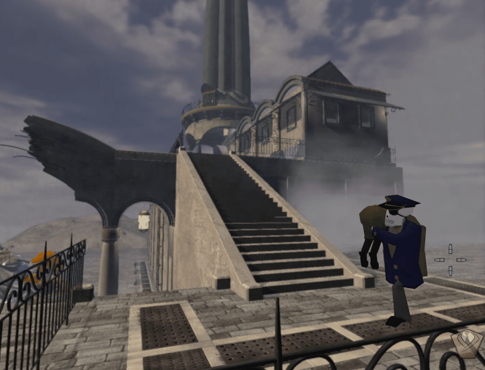